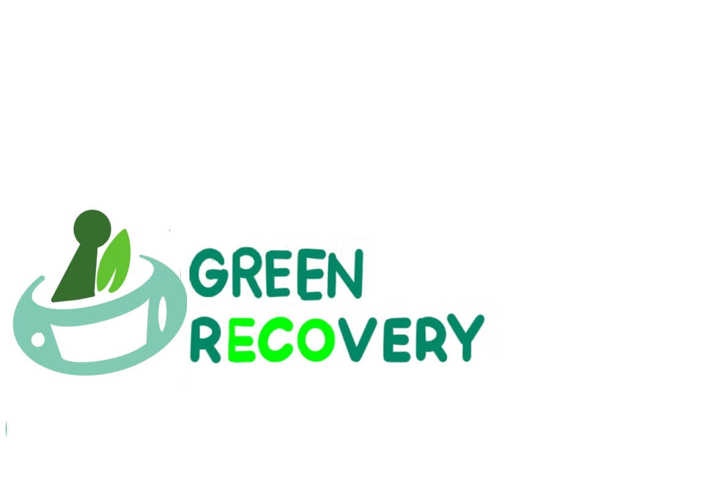

<div id="overflow">
  <div id="popup">
    <a href="#">Ok</a>
    <h1>Attention</h1>
    <p>We are still in a development stage so there maybe a few bugs and scaling issues.</p>
  </div>
</div>
<nav>
  <div class="container">
    <a class="Log_In" style="position: relative; bottom: 0.625rem" target="_blank" href="work in prog.html">LOG IN</a>
    <a class="Sign_In" style="position: relative; bottom: 0.625rem" target="_blank" href="work in prog.html">JOIN US</a>
    <a href="#" id="brand"></a>

    <ul class="navbar-menu" style="">
      <li><a class="hover-green" href="work in prog.html" target="_blank">SIMPLE SUBSTITUTES</a></li>
      <li><a class="hover-green" href="work in prog.html" target="_blank">PLASTIC PRINT</a></li>
      <li><a class="hover-green" href="work in prog.html" target="_blank">GREEN NETWORK</a></li>
      <li><a class="hover-green" href="work in prog.html" target="_blank">GLOBAL SHARE</a></li>
    </ul>
  </div>
</nav>
<!-- partial -->
<script src='https://code.jquery.com/jquery-2.2.4.min.js'></script>
<script src="./script.js"></script>

</body>

</html>

<!DOCTYPE html>
<html>

<head>
  <link rel="stylesheet" href="https://cdnjs.cloudflare.com/ajax/libs/font-awesome/5.15.1/css/all.min.css" integrity="sha512-+4zCK9k+qNFUR5X+cKL9EIR+ZOhtIloNl9GIKS57V1MyNsYpYcUrUeQc9vNfzsWfV28IaLL3i96P9sdNyeRssA==" crossorigin="anonymous" />
  <title>Green Recovery</title>
  <meta name="viewport" content="width=device-width, initial-scale=1.0">
  <link rel="stylesheet" href="css/styles.css">
  <script src="http://code.jquery.com/jquery-3.4.1.js"></script>
  <link href="https://cdn.jsdelivr.net/npm/bootstrap@5.0.1/dist/css/bootstrap.min.css" rel="stylesheet" integrity="sha384-+0n0xVW2eSR5OomGNYDnhzAbDsOXxcvSN1TPprVMTNDbiYZCxYbOOl7+AMvyTG2x" crossorigin="anonymous">
  <script src="https://cdn.jsdelivr.net/npm/bootstrap@5.0.1/dist/js/bootstrap.bundle.min.js" integrity="sha384-gtEjrD/SeCtmISkJkNUaaKMoLD0//ElJ19smozuHV6z3Iehds+3Ulb9Bn9Plx0x4" crossorigin="anonymous"></script>
</head>

<body>
  <div class="bgimg-1">
    <div class="caption">
      <p class="title white align-left" style="padding-top: 3.125rem;">At Green Recovery, we revolutionize <br> the art of sustainability</p>
      <p class="white align-left">A PLATFORM TO GUIDE AND PROMOTE AWARENESS <br> ABOUT THE WELL-BEING OF SOCIETY</p>
      <p class="white align-left line">______________________________________</p>
    </div>
    <video autoplay muted loop id="myVideo">
      <source src="https://video.wixstatic.com/video/2b0c5d_2150df168a14456cbb08aeba4f67be98/1080p/mp4/file.mp4" style="width: 1368px" type="video/mp4">
    </video>
  </div>

  <div class="bgimg-2">
    <div class="caption">
      <p class="title align-left" style="position: relative; bottom: 8.125rem;">Simple Substitutes</p>
      <p class="item-desc align-left" style="position: relative; bottom: 8.125rem;">This search engine allows users to search for <br> their desired
        household items, while our system offers <br> multiple suggestions
        for equivalent and more <br> ecological products, as well as packaging.
      </p>
      <p class="explore align-left" style="position: relative; bottom: 8.125rem;">EXPLORE <br> _________</p>
    </div>
  </div>

  <div class="bgimg-3">
    <div class="caption">
      <p class="title custom-align-right" style="position: relative; bottom: 21.75rem;">Plastic Print</p>
      <div>
        <p class="item-desc align-left right-align" style="position: relative; bottom: 21.75rem;">In Plast Print, users can track and monitor their own plastic <br>
          consumption pattern. Our software enables users to select <br>
          the products they have purchased and we create a recommended <br>
          consumption pattern to guide them to a sustainable lifestyle. <br>

        </p>
        <p class="explore align-right" style="position: relative; bottom: 20rem; right: 15.5rem; font-weight: 500">EXPLORE <br> __________</p>
      </div>
    </div>
  </div>

  <div class="bgimg-4">
    <div class="caption">
      <p class="white title align-left">Global Share</p>
      <p class="white item-desc-white align-left">This news aggregator collects the latest, newsworthy <br> articles to give our members a comprehensive overview of <br> changes and developments around the globe</p>
      <p class="white white-explore align-left">EXPLORE <br> _________</p>
    </div>
  </div>

  <div class="bgimg-5">
    <div class="caption">
      <p class="title white" style="position: relative; right: 480px; bottom: 300px;">Green Network</p>
      <p class="item-desc align-left white" style="position: relative; bottom: 300px;">This is a digital forum for members of the eco-community <br>
        to interact with each other. Plus, there is an additional forum <br>
        where members can post their projects or solutions to tackle <br>
        environmental obstacles.
      </p>
      <p class="explore white" style="position: relative; right: 595px; bottom: 300px;">EXPLORE <br> _________</p>
    </div>
  </div>

  <!-- progress-bar/scrollbar -->

  <div id="progressbar"></div>
  <script type="text/javascript">
    $(window).scroll(function() {
      var scroll = $(window).scrollTop(),
        dh = $(document).height(),
        wh = $(window).height();
      scrollPercent = (scroll / (dh - wh) * 100);
      $('#progressbar').css('height', scrollPercent + '%');
    })
  </script>

  <link rel="stylesheet" href="css/styles.css">

</body>

</html>
<footer>

  <!-- Social media icons line Start -->

  <div class="sm-handle" style="position: absolute; left: 583px;">

    <a href="work in prog.html" class="sm-button">

      <i class="fab fa-instagram"> </i>

    </a>

    <a href="work in prog.html" class="sm-button">

      <i class="fab fa-linkedin"> </i>

    </a>

    <a href="work in prog.html" class="sm-button">

      <i class="fab fa-facebook-f"> </i>

    </a>

    <a href="work in prog.html" class="sm-button">

      <i class="fab fa-twitter"> </i>

    </a>
    <h4 style="color: white; position: relative; right: 280px; text-align: center;">We collaborate with environmentalists <br>
      to make the world a better place. Join us.
    </h4>

  </div>

  <!-- Social media icons line Start -->

  <div class="footer-links">
    <div class="menu" style="position: relative; right: 100px;">

      <h4 class="menu-title">Features</h4>

      <a href="work in prog.html" target="_blank" class="menu-links">Simple Substitutes</a>

      <a href="work in prog.html" target="_blank" class="menu-links">Plastic Print</a>

      <a href="work in prog.html" target="_blank" class="menu-links">Global Share</a>

      <a href="work in prog.html" target="_blank" class="menu-links">Green Network</a>

    </div>

    <div class="menu" style="position: relative; left: 100px;">

      <h4 class="menu-title">Quick Links</h4>

      <a href="work in prog.html" target="_blank" class="other-links">Contact Us</a>

      <a href="work in prog.html" target="_blank" class="other-links">About Us</a>

      <a href="work in prog.html" target="_blank" class="other-links">FAQ</a>

      <a href="work in prog.html" target="_blank" class="other-links">Sign-in/Sign-out</a>

      <a href="work in prog.html" target="_blank" class="other-links">Recieve Updates</a>

    </div>

  </div>

  <!-- copyright area -->

  <p class="copyright" style="position: relative; top: 40px;">&copy Copyright 2021 | Green Recovery</p>

</footer>
